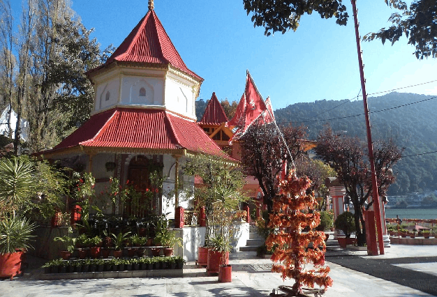
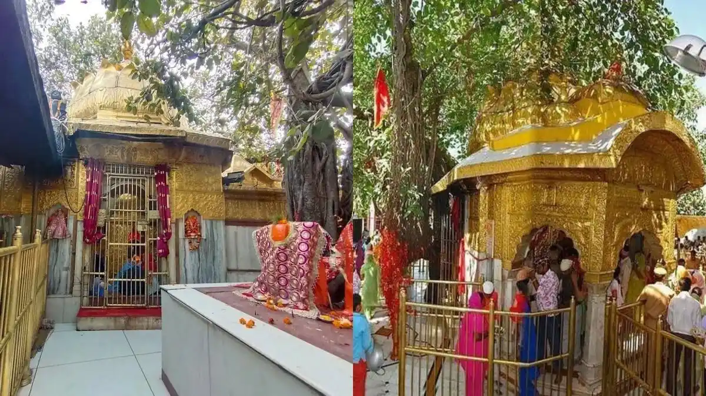
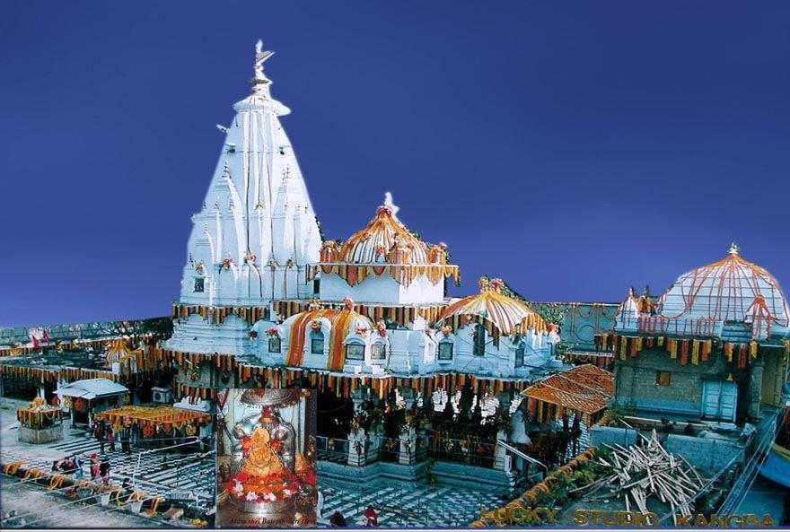
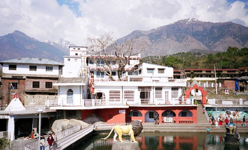
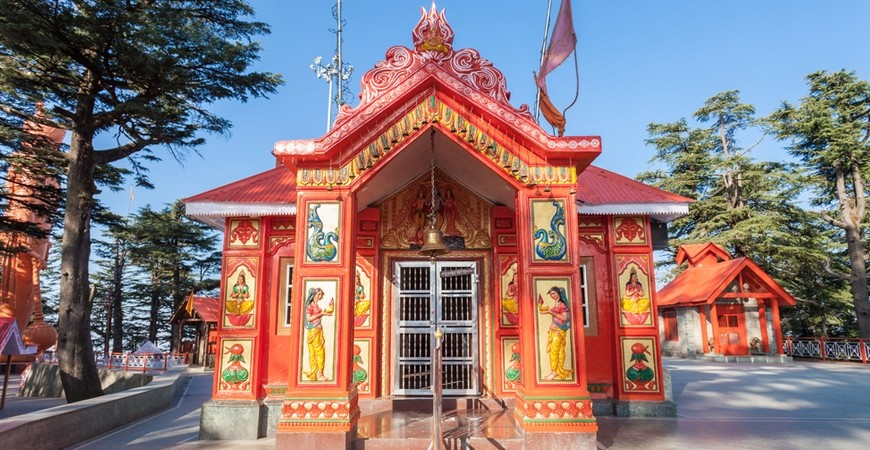

Temples and piligrimages in Himachal Pradesh
The 5 Devi Darshan in Himachal Pradesh is a sacred pilgrimage covering five revered Shakti Peethas: Naina Devi, Chintpurni, Jwala Devi, Brajeshwari Devi, and Chamunda Devi. These temples in the Kangra, Una, and Bilaspur districts are believed to be spots where parts of Goddess Sati fell, attracting pilgrims seeking blessings, peace, and spiritual
Naina Devi Mandir

Naina Devi Temple, also known as Shri Naina Devi Ji, is a famous Hindu Shakti Peetha located in the Bilaspur district of Himachal Pradesh. The temple is located on a hill in the Shivalik Range and is believed to be the site where Sati's eyes fell. It is a popular pilgrimage site where devotees worship Goddess Naina.
- Naina Devi Temple (Himachal Pradesh) Tourist Information:
- Location: Bilaspur, Himachal Pradesh (at an altitude of about 1219 metres).
- Key attractions: Statue of Mata Naina Devi, Gobind Sagar Lake, Bhakra Dam and beautiful view of Anandpur Sahib.
- Best time: Chaitra Navratra (March-April) and Ashwin Navratra (September-October), Shravan Ashtami (July-August).
How to reach:
- By Air: Chandigarh is the nearest airport (approximately 100-108 km).
- Train: The nearest railway station is Anandpur Sahib (20-30 km).
- Road: 100 km from Chandigarh, 70–85 km from Bilaspur and 20 km from Anandpur Sahib.
- Facilities: Parking, dharamshalas for stay and restaurants are available near the temple.
- Click here for more information.
Chintpurni Mandir

Chintpurni Mandir, located in Una district, Himachal Pradesh, is a revered Hindu Shakti Peetha dedicated to Maa Chinnamastika Devi, or Maa Chintpurni, who is believed to remove all worries (chinta) of her devotees. Situated atop the Sola Singhi Range, the temple features the Goddess in her pindi form, attracting thousands of pilgrims, especially during Navratras.
- Tourist Information
- Location: Situated on a hill in the Sola Singhi Range in Una district, Himachal Pradesh.
- Deity: Mata Chintpurni (Chinnamastika Devi), representing the Goddess without a head.
- Best Time to Visit: March-April, July-August, and September-October during Navratri fairs. Generally pleasant throughout the year; avoid heavy monsoons.
- Temple Timings: 4:00 AM – 11:00 PM.
How to Reach:
- Air: Gaggal Airport (Kangra), approx. 60 km away.
- Rail: Nearest stations are Amb Andaura (20 km), Hoshiarpur (42 km), and Una (50 km).
- Road: Easily reachable via taxi/bus from Hoshiarpur (approx. 45 km) and Jwalamukhi.
- Click here for more information.
Jwaladevi Mandir

Jwala Devi Mandir, located in Kangra, Himachal Pradesh, is a highly revered Hindu temple and one of the 51 Shakti Peethas. It is famous for nine eternal, naturally burning blue flames (jyotis) representing Goddess Durga, which burn continuously without fuel. The temple is considered a powerful spiritual site where Goddess Sati's tongue is believed to have fallen.
Key Tourist Information
- Location: Jawalamukhi town, Kangra district, Himachal Pradesh (approx. 35 km from Kangra Valley).
- Best Time to Visit: March to November is ideal, with Navratri (March-April and October) being the most popular, high-energy, and festive times.
- Entry Fee: Free entry.
- Temple Timings: 5:00 AM – 12:00 PM and 4:00 PM – 8:00 PM.
- Key Offerings: Devotees offer bhog (like rabri) and attend the five daily Aartis.
- Facilities: Free langar (food), medical facilities, and clean premises are provided by the trust.
- Click here for more information.
Brajeshwari Devi Mandir

The Brajeshwari Devi Temple, located in Kangra, Himachal Pradesh, is a revered Hindu shrine and one of the 51 Shakti Peethas. Dedicated to Goddess Vajreshwari (a form of Durga), it is believed to be the spot where Sati's left breast fell. Known for its immense historical significance and antiquity, the temple is a major pilgrimage site.
Key Tourist Information
- Location: Situated in the heart of Kangra town, anciently known as Nagarkot, in Kangra district.
- Darshan Timings: Generally open from 5:30 AM to 12:00 PM and 12:30 PM to 9:00 PM (times can vary slightly based on season).
- Best Time to Visit: March to June (pleasant weather) or November to February for a serene experience. The town is very crowded during the Makar Sankranti festival in January.
- Accessibility: Located near the Kangra cricket stadium, the approach is through a bustling, narrow market street.
- Nearby Attractions: Include Jwala Devi Temple and Chamunda Devi Temple, often visited together.
Chamunda Devi Mandir

The Chamunda Devi Mandir, also known as Chamunda Nandikeshwar Dham, is a historic 700-year-old temple in Himachal Pradesh’s Kangra district, dedicated to Goddess Kali (Chamunda), a form of Durga. Situated on the banks of the Baner River, it is revered as one of the 51 Shakti Peethas and features a, cave-like shrine with views of the Dhauladhar Range.
Key Tourist Information:
- Location: Approximately 15 km from Dharamsala and 55 km from Jwalamukhi in Kangra district.
- Main Attraction: The temple houses a sacred cave-like scoop on the backside, representing Lord Shiva (Nandikeshwar), and a central idol of Chamunda Devi draped in red.
- Best Time to Visit: September to March (pleasant weather) or during Navratri (March/April and September/October).
- How to Reach:
- Air: The nearest airport is Gaggal Airport (Kangra Airport), 15–28 km away.
- Rail: The nearest railhead is Moranda near Palampur (30 km), or Pathankot railway station.
- Road: Easily accessible by taxi or bus from Dharamsala and Palampur.
- Other Attractions: Nearby spots include the beautiful Dhauladhar range views, and the original hilltop shrine location, Aadi Himani Chamunda.
- Click here for more information.
Jakhoo Temple Shimla

Jakhu Temple is an ancient Hindu temple in Shimla dedicated to Lord Hanuman, located on Jakhoo Hill, the town's highest point at 2,455 meters. It features a iconic 108-foot (33-meter) statue of Hanuman, unveiled in 2010, which is taller than Rio's Christ the Redeemer. The temple is easily accessible via the Jakhu Ropeway, taxis, or a 2.5 km steep trek, offering panoramic views of the Shivalik ranges.
Key Tourist Information:
- Timings: Generally open daily from 6 AM/7 AM to 8 PM/9 PM (free entry).
- Significance: Dedicated to Hanuman; legend says he rested here while seeking the Sanjivani Booti.
- Statue: The 108-foot-tall idol was inaugurated in 2010.
- Accessibility: You can walk (steep 30-45 min walk from Ridge), take a taxi, or use the ropeway from near the Ridge.
- Monkeys: The area is known for a large, sometimes aggressive, monkey population; keep belongings secure.
- Best Time: Early morning or sunset for panoramic views.
- Click here more information.